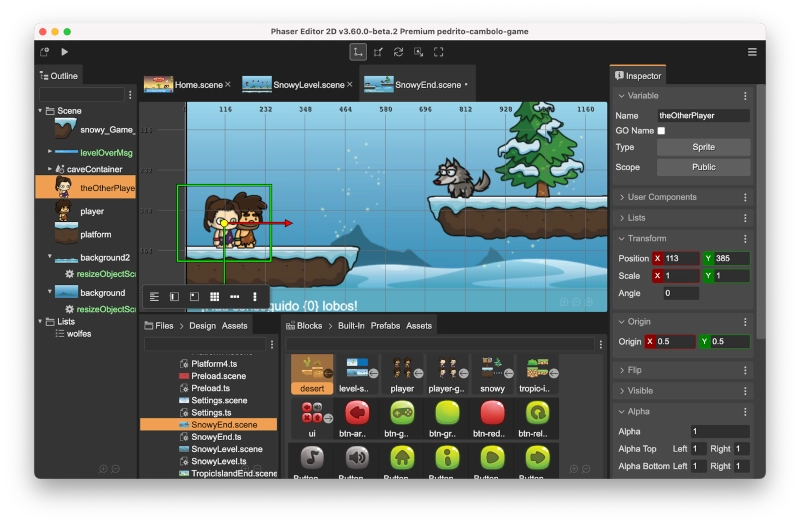

Phaser Editor 2D Help
Welcome to the Phaser Editor 2D v3 documentation!
Phaser Editor 2D is a powerful visual development tool for creating 2D games using the Phaser game engine. With its intuitive interface and extensive set of features, it allows developers of all skill levels to quickly and easily create high-quality games for desktop and mobile platforms. Whether you’re a beginner or an experienced developer, Phaser Editor 2D provides everything you need to bring your game ideas to life.
Last update: 2023-07-01